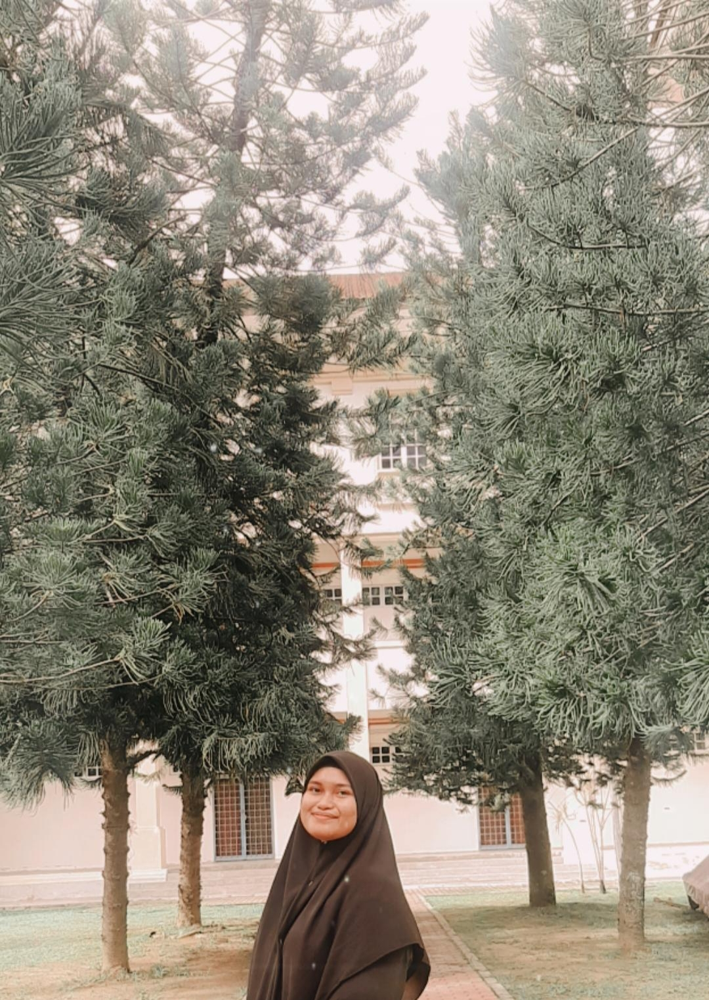

Assalamualaikum and hi everyone. Welcome to Aishah Diary!!!
My name is Aishah Fateha Binti Ahmad and I am 20 years old. I hope you enjoy scrolling through my website. I'm not a professional on building and
managing a website, but I have tried my best to achieve good results. I am in a difficult phase right now, my father just had an operation to remove a
Cancer tumor and he is in recovery. After he's fully recovered, he will start with his chemotherapy treatment right away and currently I am the only
one who could help driving my mother and father to hospital for their treatments. I hope I can go through this semester without any problems and
managed to graduate next year. This is just a little bit of me expressing my feelings with words.
ABOUT ME

AISHAH FATEHA BINTI AHMAD
Born on 01.04.2001
20 Years Old
Currently a Diploma students in Information Management in UiTM Kedah
Lunas, Kedah
EDUCATIONAL BACKGROUND
Complete elementary school at Sekolah Kebangsaan Sungai Seluang. Complete secondary school at Sekolah Menengah Kebangsaan Lunas.Receive my SPM
certificate in 2019 with 2A-, 4B+, 1B, 1C, and 1D. I am currently a Diploma student at UiTM Kedah in Diploma of Infromation Management. I am
currently in my 5th semester, which eventually is my last semester before I graduate.
PERSONALITY
I am a creative, hardworking, and observant person. I became extremely observant whenever I was in a class and when I was drawing. I typically
observant during drawing because when drawing the sketch and outcomes of the drawing need to be neat; therefore I tend to stress on making my drawing looks neat.